UX CASE STUDY - STUDENT APP
CLIENT: F.I.R.S.T Institute
TYPE: SCRUM
Time Duration: Oct 3rd 2024 | Five days
Roles & Responsiblities: Research & Wireframing
Tools Used: Figma
Overview
This was our final project of this course, we were working in a group of four to come up with a new social media app for F.I.R.S.T. Institute students. The goal of this project was to develop the main pages of the app, without delving too deep into the deeper individual pages of the site map. We were to follow F.I.R.S.T.'s brand guidelines in order to maintain brand consistency.

Requirments
Our group was responsible for designing 9 pages of an app. How we showed these in our designs are completely up to us and our group. This can be through links, buttons, icons, etc. These where the required pages.
- Home
- Sign-in Page
- Profile
- Inbox
- Chat
- Photo Gallery
- Event
- Contacts
- Groups Choice : Create a post
Design Process
User Research: My part of the design Process was to work on the sign in page and the home page, i started researching inspirations for how home pages and sign in pages look, i gathered all my all research and created a mood board, which helped me come up with my low-fi wireframes.
Wireframing
Lo-Fi: My lo-fi's were created from my research , this is what our hi-fi was based on.

MI-FI: MY mid level wireframe was looking like this after all my research and low-fi work we as a group decided on the app aesthetic which was "Neubrutalism" because we wanted the app to have a early 2000 web but still sticking to the clents colors so this was our wireframe.
 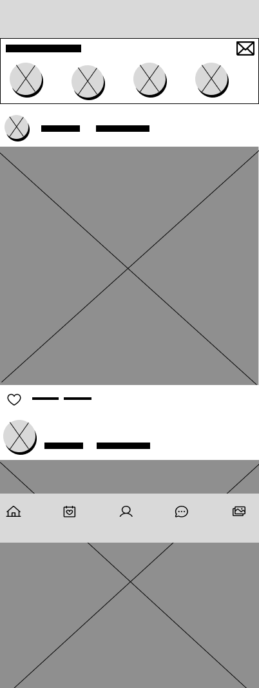
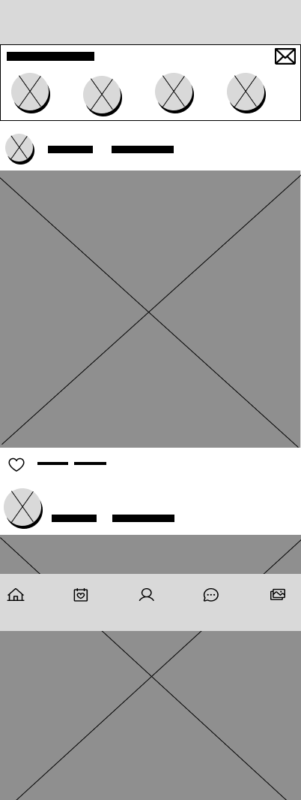
HI-FI: I turned my Mi-Fi into a High - Fidelity wireframe, i sticked to the clients colors and made the sign in page very basic.


Protoyping
This was our final protoype for the student app using figma,it worked as desired by the client, all nine pages of the app were protoyed and worked well with each other. Here is a link to our protoype. View App protoype
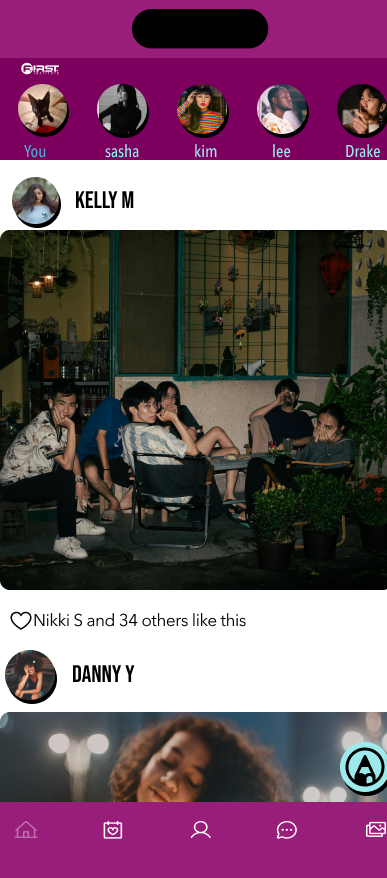
 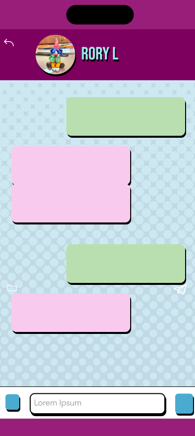
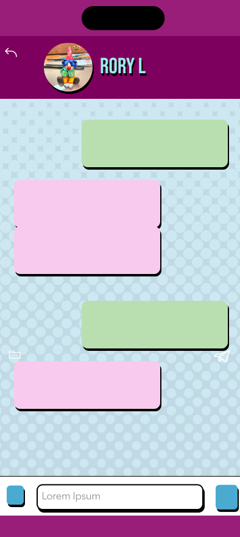
 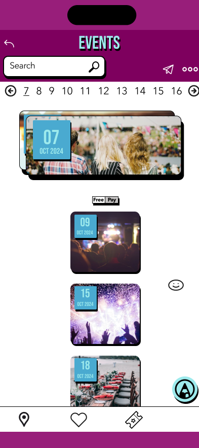
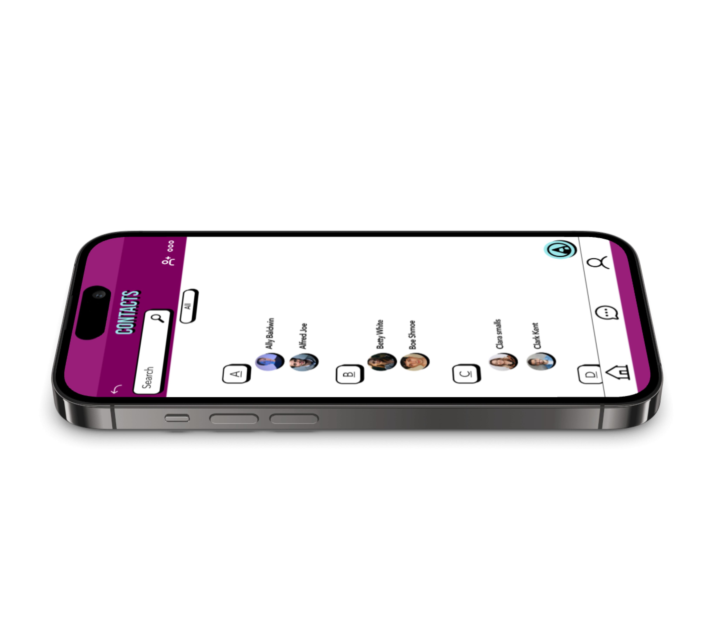
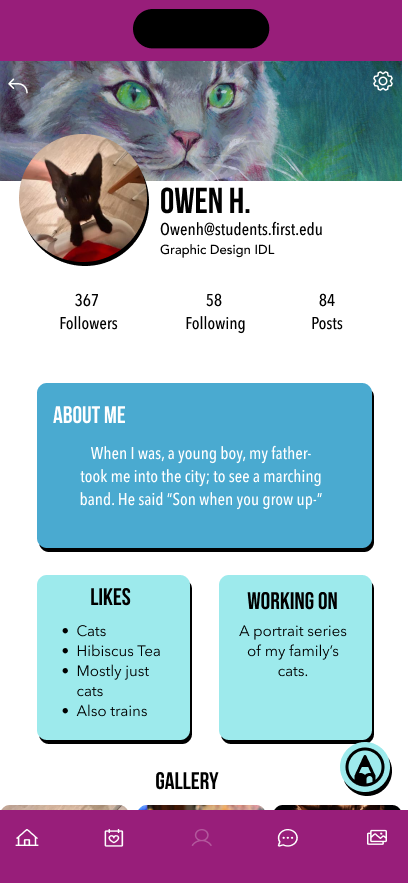
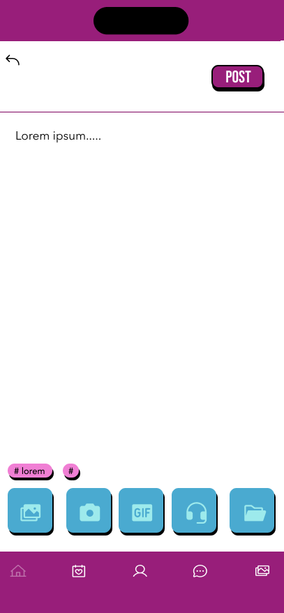
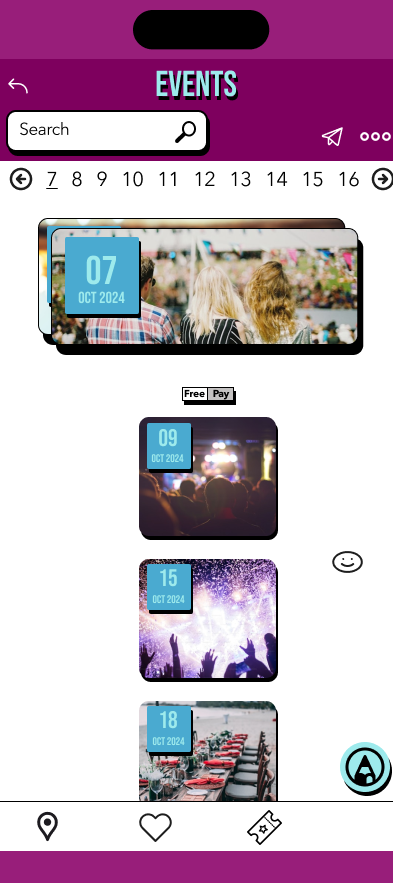
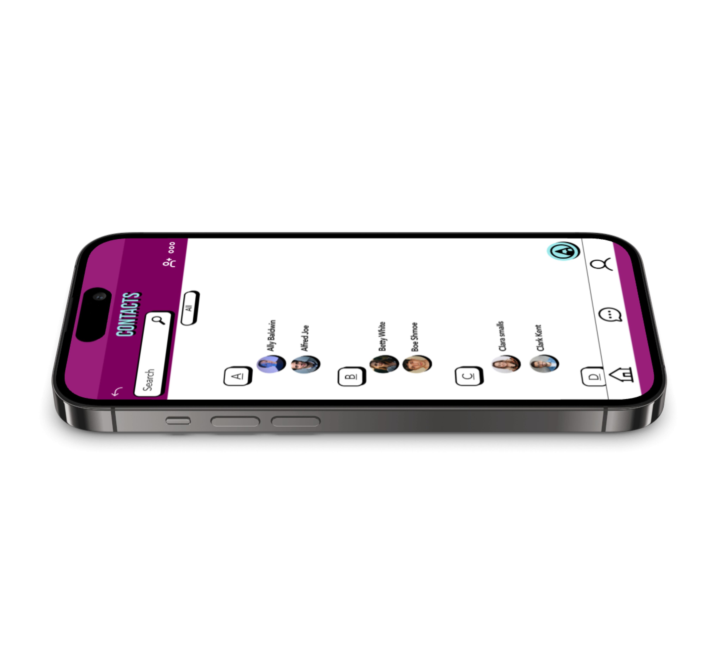
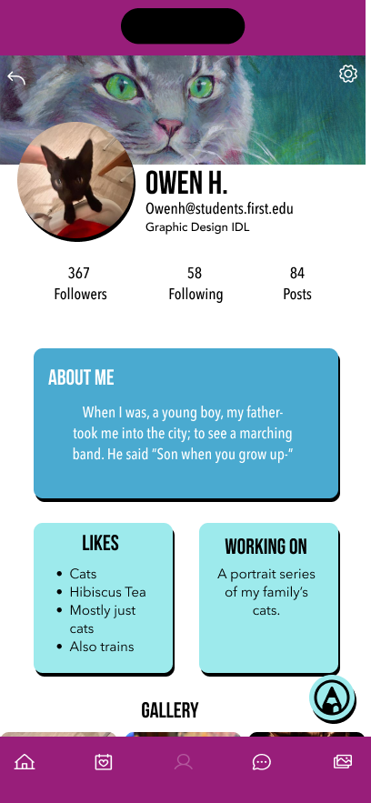
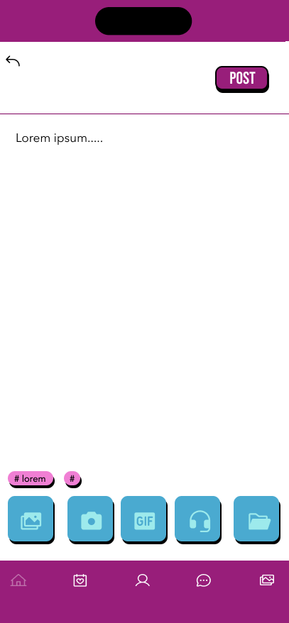